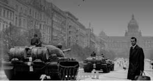
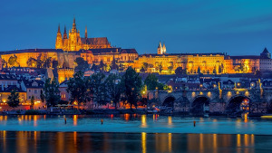
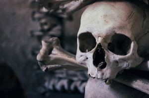

PRAGA
Praga Txekiar Errepublikako hiriburua da. Milioi bat biztanle baino gehiago dituen hiria, Ehun Dorreen hiria edo Urrezko hiria ere deitzen zaio. Praga bisitatzea maitagarrien ipuin batean sartzea bezalakoa da, dorre infinituek eta magikoek printzesa ongietorria ematen baitute. Badirudi kaleak zentzumenen gozamen soilerako sortuak direla eta dendak imajina daitezkeen zainketa handienekin apainduta daude. Hiria inguratzen duen Erdi Aroko giro nabaria bisitariak antzinako garaietara eramateko gai da, leku berezi hori inoiz ahaztu ez dezaten.Pragara bidaiatu baino lehen komeni da gertakari interesgarriak eta bere historia liluragarria ezagutzea.
Komunismoaren Tour-ra

Bigarren Mundu Gerraren ondoren,
komunistak erraz hartu zuten
boterea Txekoslovakian eta
zuzenbideko estatu gogorra
ezarri zuten kulturan arrasto
nahastezina utzi zuena. Bi
erregimenekin lotutako leku
historikoak erakutsiko dizkizugu.
Gaztelu Tour-ra

Pragako bidaia osatu gabe egongo
litzateke Pragako gaztelu dotorea
bisitatu gabe.Gure ibilbidean munduko
Erdi Aroko gaztelurik handiena
eta inguruko auzoak bisitatuko ditugu,
hiri osoko zubirik zaharrenetik John
Lennon harresiraino.
Garagardoaren Tour-ra
Garagardoa txekiar kulturaren funtsezko
atala da. Ezin da mahaian falta, eta
horrek benetan moldatu du herrialde
honen historia. Ibilbidean zehar urrezko
edariaren historia ezagutuko duzu.
Kutna Hora

Kutná Hora Pragatik ordubetera dagoen
herri bat da. Herri hau ia aire zabaleko
museoa da, Erdialdeko Europan altxor
arkitektoniko zoragarrienetarikoak.
Unescok Gizateriaren Ondare
izendatutako erdigune historikoarekin.
Terezin

Ezagutu nazien kontzentrazio esparru
bateko Europako historiako kapitulu
tragikoa. Bisitatu Terezin Memoriala
FreeTour
Ehun Dorreen Hiria mundu osoan ezaguna da,
Praga bisitatzen baduzu arkitektura bikainaz
gozatuko duzu. Urrezko Hiriak mainteminduta
utziko zaitu. Maitagarriko gaztelutikhasi eta
garaikomunistako aztarnetaraino, beti dago
zerbait berria Txekiar Errepublikako
hiriburuko kale bazterretan.